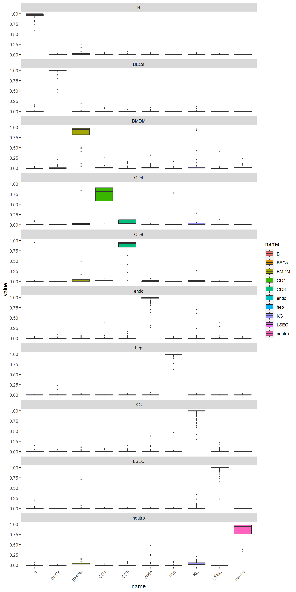
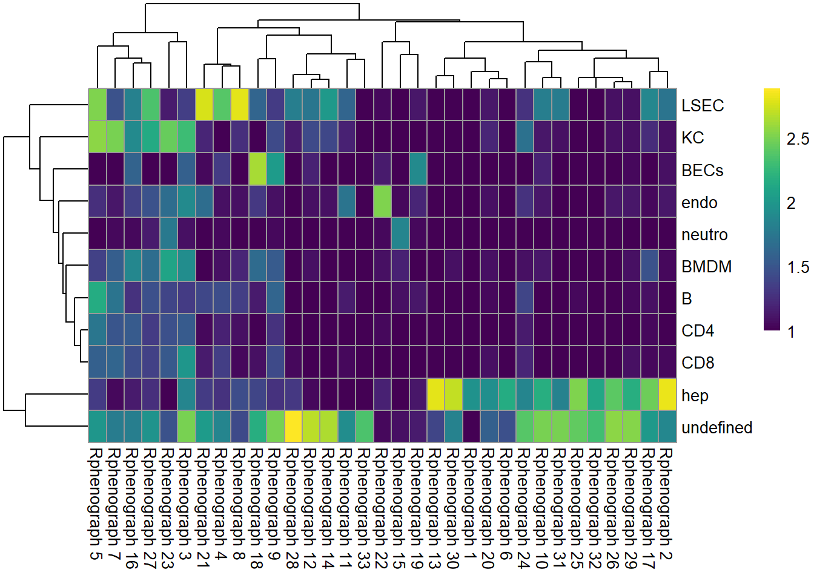
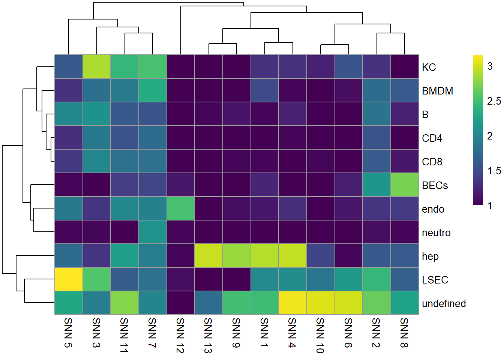
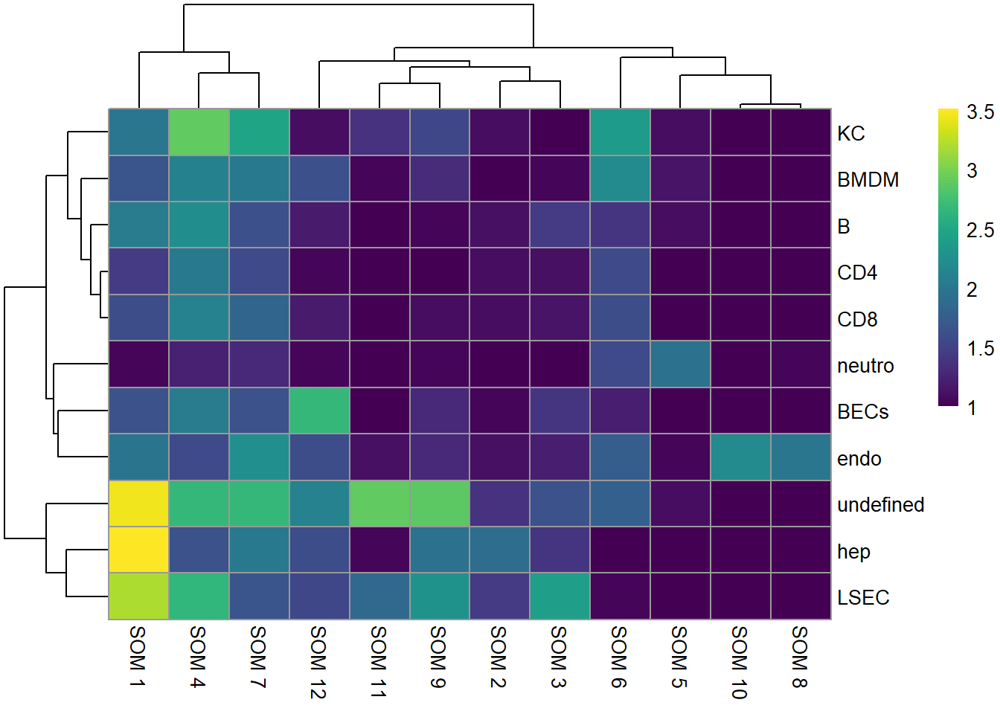
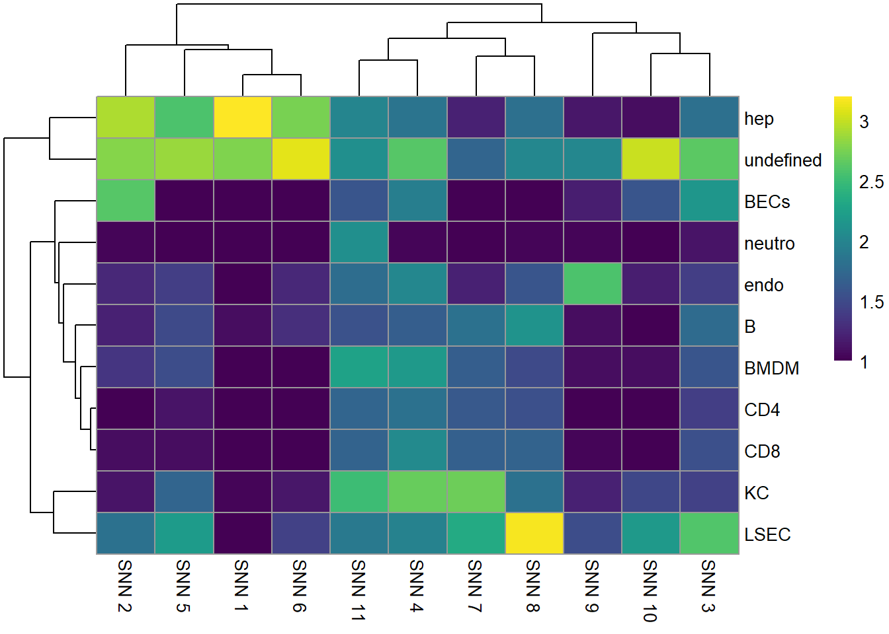
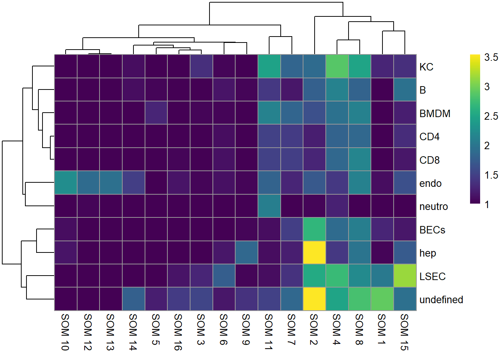
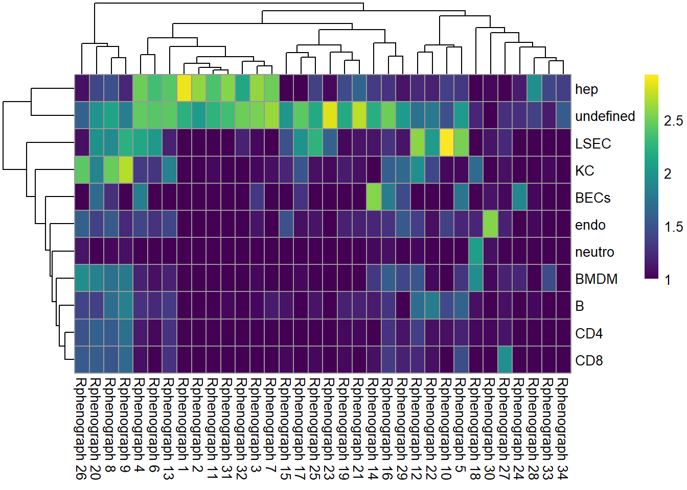

IMC data analysis workflow
Tess Brodie
University of Bern, DBMR, Visceral and Transplantation Surgery lab
Last updated: 2022-08-30
Checks: 5 2
Knit directory: 220707_workflowr/
This reproducible R Markdown analysis was created with workflowr (version 1.7.0). The Checks tab describes the reproducibility checks that were applied when the results were created. The Past versions tab lists the development history.
Great! Since the R Markdown file has been committed to the Git repository, you know the exact version of the code that produced these results.
Great job! The global environment was empty. Objects defined in the global environment can affect the analysis in your R Markdown file in unknown ways. For reproduciblity it’s best to always run the code in an empty environment.
The command set.seed(20220718) was run prior to running
the code in the R Markdown file. Setting a seed ensures that any results
that rely on randomness, e.g. subsampling or permutations, are
reproducible.
Great job! Recording the operating system, R version, and package versions is critical for reproducibility.
- boxplots
- check performance
- classify new data
- colors
- cytomapperShiny
- heatmap
- load-libs
- load data
- mean marker expression across samples
- read in data
- save spe4
- session-info-chunk-inserted-by-workflowr
- Train classifier
- unnamed-chunk-1
- visualize performance
To ensure reproducibility of the results, delete the cache directory
4_cell_annotation_cache and re-run the analysis. To have
workflowr automatically delete the cache directory prior to building the
file, set delete_cache = TRUE when running
wflow_build() or wflow_publish().
Using absolute paths to the files within your workflowr project makes it difficult for you and others to run your code on a different machine. Change the absolute path(s) below to the suggested relative path(s) to make your code more reproducible.
| absolute | relative |
|---|---|
| C:/Users/IMC Platform laptop/Users2/Tess/SteinbockCellSegmentation/220707/220707_workflowr | . |
Great! You are using Git for version control. Tracking code development and connecting the code version to the results is critical for reproducibility.
The results in this page were generated with repository version db869f5. See the Past versions tab to see a history of the changes made to the R Markdown and HTML files.
Note that you need to be careful to ensure that all relevant files for
the analysis have been committed to Git prior to generating the results
(you can use wflow_publish or
wflow_git_commit). workflowr only checks the R Markdown
file, but you know if there are other scripts or data files that it
depends on. Below is the status of the Git repository when the results
were generated:
Ignored files:
Ignored: .Rhistory
Ignored: .Rproj.user/
Ignored: analysis/.Rhistory
Ignored: analysis/0_prep_data_cache/
Ignored: analysis/1_QC_mask_cache/
Ignored: analysis/2_batch_effect_correction_cache/
Ignored: analysis/3_dim_red_cache/
Ignored: analysis/4_cell_annotation_cache/
Ignored: analysis/5_sc_vis_cache/
Ignored: analysis/6_img_vis_cache/
Ignored: analysis/7_spatial_vis_cache/
Untracked files:
Untracked: Rplot.png
Untracked: UMAP_correctedvalues.pdf
Untracked: Umap_celltype_overlay.pdf
Untracked: allchannels_histogram.pdf
Untracked: allchannels_multidimplot.pdf
Untracked: alldata_lsecs.rds
Untracked: data/Joseentraining/
Untracked: data/Macro.ijm.ijm.ijm
Untracked: data/cellpose png masks/
Untracked: data/cluster_annotation.png
Untracked: data/cluster_annotation.xlsx
Untracked: data/fiji composite images/
Untracked: data/images.csv
Untracked: data/images.rds
Untracked: data/img/
Untracked: data/intensities/
Untracked: data/masks.rds
Untracked: data/masks/
Untracked: data/neighbors/
Untracked: data/panel.csv
Untracked: data/raw/
Untracked: data/regionprops/
Untracked: data/sample_metadata.xlsx
Untracked: data/spe.rds
Untracked: gated_cells/
Untracked: gated_cells2/
Untracked: marker_umap_corrected.png
Untracked: output/spe0.rds
Untracked: output/spe1.rds
Untracked: output/spe2.rds
Untracked: output/spe3.rds
Untracked: output/spe4.rds
Unstaged changes:
Modified: analysis/_site.yml
Deleted: analysis/about.Rmd
Deleted: analysis/license.Rmd
Note that any generated files, e.g. HTML, png, CSS, etc., are not included in this status report because it is ok for generated content to have uncommitted changes.
These are the previous versions of the repository in which changes were
made to the R Markdown (analysis/4_cell_annotation.Rmd) and
HTML (docs/4_cell_annotation.html) files. If you’ve
configured a remote Git repository (see ?wflow_git_remote),
click on the hyperlinks in the table below to view the files as they
were in that past version.
| File | Version | Author | Date | Message |
|---|---|---|---|---|
| Rmd | db869f5 | tessbrodie | 2022-08-30 | Publish the initial files for myproject |
Cell classification
Load packages
library(SpatialExperiment)
library(Rphenograph)
library(igraph)
library(dittoSeq)
library(viridis)
library(bluster)
library(BiocParallel)
library(ggplot2)
library(scran)
library(CATALYST)
library(kohonen)
library(ConsensusClusterPlus)
library(patchwork)
library(pheatmap)
library(gridExtra)
library(cytomapper)
library(Rphenoannoy)
library(SingleCellExperiment)
library(caret)
library(ggridges)
library(patchwork)
library(pheatmap)
library(gridExtra)
library(scuttle)
library(stringr)
library(tidyverse)Load data
spe <- readRDS(file.path("output", "spe3.rds"))
# Sample cells
cur_cells <- sample(seq_len(ncol(spe)), 2000)Cell classification: manual labeling of cells with cytomapper shiny app (not working well due to doublets)
Define color vectors
Read in and consolidate labeled data
label_files <- list.files("gated_cells2",
full.names = TRUE, pattern = ".rds$")
# Read in SPE objects
spes <- lapply(label_files, readRDS)
# Merge SPE objects
concat_spe <- do.call("cbind", spes)'sample_id's are duplicated across 'SpatialExperiment' objects to cbind; appending sample indices.#clean indices from multiple ROI
#cleaned <- substring(concat_spe$cytomapper_CellLabel, 3)
cleaned <- gsub('.{2}$', '', concat_spe$cytomapper_CellLabel)
#Change K to k in cleaned
#cleaned <- gsub(pattern = "Kupffer", replacement = "kupffer", cleaned)
#Identify doublets
cur_tab <- unclass(table(colnames(concat_spe), cleaned))
colSums(cur_tab) B BECs BMDM CD4 CD8 endo hep KC LSEC neutro
209 223 313 55 80 465 3485 1267 1732 92 cur_labels <- rep("doublets", nrow(cur_tab))
names(cur_labels) <- rownames(cur_tab)
# Single assignments
single_index <- rowSums(cur_tab) == 1
cur_labels[single_index] <- colnames(cur_tab)[apply(cur_tab[single_index,], 1,
which.max)]
# Check for number of double ID cells
cur_tab[rowSums(cur_tab > 1),] cleaned
B BECs BMDM CD4 CD8 endo hep KC LSEC neutro# Remove doublets
cur_labels <- cur_labels[cur_labels != "doublets"]
table(cur_labels)cur_labels
B BECs BMDM CD4 CD8 endo hep KC LSEC neutro
174 222 193 54 79 432 3473 981 1557 86 # Transfer labels to SPE object
spe_labels <- rep("unlabeled", ncol(spe))
names(spe_labels) <- colnames(spe)
spe_labels[names(cur_labels)] <- cur_labels
spe$cell_labels <- spe_labels
# Number of cells labeled per patient
table(spe$cell_labels, spe$patient_id)
1 2 3 4 5 6
B 10 26 47 53 20 18
BECs 31 10 9 29 70 73
BMDM 19 19 9 17 74 55
CD4 4 10 9 5 19 7
CD8 15 19 2 7 24 12
endo 30 26 13 37 154 172
hep 838 665 329 444 583 614
KC 130 212 135 86 278 140
LSEC 105 208 452 484 164 144
neutro 18 17 7 9 23 12
unlabeled 1393 1140 1162 1327 1841 1407Train classifier
# Split between labeled and unlabeled cells
lab_spe <- spe[,spe$cell_labels != "unlabeled"]
unlab_spe <- spe[,spe$cell_labels == "unlabeled"]
# Randomly split into train and test data
set.seed(20220718)
trainIndex <- createDataPartition(factor(lab_spe$cell_labels), p = 0.75)
train_spe <- lab_spe[,trainIndex$Resample1]
test_spe <- lab_spe[,-trainIndex$Resample1]
# Specify train parameters for 5-fold cross validation
fitControl <- trainControl(method = "cv",
number = 5)
# Select the data for training
cur_mat <- t(assay(train_spe, "exprs"))
# Train a random forest model for predicting cell labels
# This call also performs parameter tuning
#set.seed(220510)
rffit <- train(x = cur_mat,
y = factor(train_spe$cell_labels),
method = "rf", ntree = 1000,
tuneLength = 5,
trControl = fitControl)
rffitRandom Forest
5442 samples
23 predictor
10 classes: 'B', 'BECs', 'BMDM', 'CD4', 'CD8', 'endo', 'hep', 'KC', 'LSEC', 'neutro'
No pre-processing
Resampling: Cross-Validated (5 fold)
Summary of sample sizes: 4353, 4352, 4355, 4354, 4354
Resampling results across tuning parameters:
mtry Accuracy Kappa
2 0.9819915 0.9742104
7 0.9919148 0.9884453
12 0.9919158 0.9884500
17 0.9919161 0.9884490
23 0.9900779 0.9858222
Accuracy was used to select the optimal model using the largest value.
The final value used for the model was mtry = 17.Classifier performance
ggplot(rffit) +
geom_errorbar(data = rffit$results,
aes(ymin = Accuracy - AccuracySD,
ymax = Accuracy + AccuracySD),
width = 0.4) +
theme_classic(base_size = 15)
plot(varImp(rffit))
# Select test data
cur_mat <- t(assay(test_spe, "exprs"))
# Predict cell phenotypes in test data
cur_pred <- predict(rffit,
newdata = cur_mat)
cm <- confusionMatrix(data = cur_pred,
reference = factor(test_spe$cell_labels),
mode = "everything")
cmConfusion Matrix and Statistics
Reference
Prediction B BECs BMDM CD4 CD8 endo hep KC LSEC neutro
B 43 0 0 0 1 0 0 0 0 0
BECs 0 55 0 0 0 0 0 0 0 0
BMDM 0 0 44 1 2 0 0 0 1 0
CD4 0 0 0 11 0 1 0 0 0 0
CD8 0 0 0 0 16 0 0 0 0 0
endo 0 0 0 0 0 105 0 0 0 1
hep 0 0 0 1 0 0 868 2 0 0
KC 0 0 3 0 0 2 0 243 0 0
LSEC 0 0 0 0 0 0 0 0 388 0
neutro 0 0 1 0 0 0 0 0 0 20
Overall Statistics
Accuracy : 0.9912
95% CI : (0.9857, 0.9949)
No Information Rate : 0.4798
P-Value [Acc > NIR] : < 2.2e-16
Kappa : 0.9873
Mcnemar's Test P-Value : NA
Statistics by Class:
Class: B Class: BECs Class: BMDM Class: CD4 Class: CD8
Sensitivity 1.00000 1.0000 0.91667 0.846154 0.842105
Specificity 0.99943 1.0000 0.99773 0.999443 1.000000
Pos Pred Value 0.97727 1.0000 0.91667 0.916667 1.000000
Neg Pred Value 1.00000 1.0000 0.99773 0.998887 0.998327
Precision 0.97727 1.0000 0.91667 0.916667 1.000000
Recall 1.00000 1.0000 0.91667 0.846154 0.842105
F1 0.98851 1.0000 0.91667 0.880000 0.914286
Prevalence 0.02377 0.0304 0.02653 0.007186 0.010503
Detection Rate 0.02377 0.0304 0.02432 0.006081 0.008845
Detection Prevalence 0.02432 0.0304 0.02653 0.006633 0.008845
Balanced Accuracy 0.99972 1.0000 0.95720 0.922799 0.921053
Class: endo Class: hep Class: KC Class: LSEC Class: neutro
Sensitivity 0.97222 1.0000 0.9918 0.9974 0.95238
Specificity 0.99941 0.9968 0.9968 1.0000 0.99944
Pos Pred Value 0.99057 0.9966 0.9798 1.0000 0.95238
Neg Pred Value 0.99824 1.0000 0.9987 0.9993 0.99944
Precision 0.99057 0.9966 0.9798 1.0000 0.95238
Recall 0.97222 1.0000 0.9918 0.9974 0.95238
F1 0.98131 0.9983 0.9858 0.9987 0.95238
Prevalence 0.05970 0.4798 0.1354 0.2150 0.01161
Detection Rate 0.05804 0.4798 0.1343 0.2145 0.01106
Detection Prevalence 0.05860 0.4815 0.1371 0.2145 0.01161
Balanced Accuracy 0.98582 0.9984 0.9943 0.9987 0.97591Visualize classifier performance
data.frame(cm$byClass) %>%
mutate(class = sub("Class: ", "", rownames(cm$byClass))) %>%
ggplot() +
geom_point(aes(1 - Specificity, Sensitivity,
size = Detection.Rate,
fill = class),
shape = 21) +
#scale_fill_manual(values = metadata(spe)$color_vectors$celltype) +
theme_classic(base_size = 15) +
ylab("Sensitivity (TPR)") +
xlab("1 - Specificity (FPR)")
cur_pred <- predict(rffit,
newdata = cur_mat,
type = "prob")
cur_pred$truth <- factor(test_spe$cell_labels)
cur_pred %>%
pivot_longer(cols = neutro:B) %>%
ggplot() +
geom_boxplot(aes(x = name, y = value, fill = name), outlier.size = 0.5) +
facet_wrap(. ~ truth, ncol = 1) +
#scale_fill_manual(values = metadata(spe)$color_vectors$celltype) +
theme(panel.background = element_blank(),
axis.text.x = element_text(angle = 45, hjust = 1))
Classification of new data
# Select unlabeled data
cur_mat <- t(assay(unlab_spe, "exprs"))
# Predict cell phenotypes
cell_class <- as.character(predict.train(rffit,
newdata = cur_mat,
type = "raw"))
names(cell_class) <- rownames(cur_mat)
# Extract classification probabilities
cell_prob <- predict.train(rffit,
newdata = cur_mat,
type = "prob")
# Distribution of maximum probabilities
tibble(max_prob = rowMax(as.matrix(cell_prob)),
type = cell_class) %>%
ggplot() +
geom_density_ridges(aes(x = max_prob, y = cell_class, fill = cell_class)) +
#scale_fill_manual(values = metadata(spe)$color_vectors$celltype) +
theme_classic(base_size = 15) +
xlab("Maximum probability") +
ylab("Cell type") +
xlim(c(0,1.2))Picking joint bandwidth of 0.0584
# Label undefined cells
cell_class[rowMax(as.matrix(cell_prob)) < 0.4] <- "undefined"
# Store labels in SpatialExperiment onject
cell_labels <- spe$cell_labels
cell_labels[colnames(unlab_spe)] <- cell_class
spe$celltype <- cell_labels
table(spe$celltype, spe$patient_id)
1 2 3 4 5 6
B 62 71 52 60 45 45
BECs 180 27 13 45 223 180
BMDM 56 71 12 26 170 101
CD4 34 39 13 25 38 21
CD8 63 35 4 12 78 58
endo 63 57 15 44 193 229
hep 882 682 331 448 595 633
KC 204 369 155 108 387 202
LSEC 368 391 543 594 344 294
neutro 30 19 8 10 33 22
undefined 651 591 1028 1126 1144 869Visualize comparison of cell label classification with clusters using heatmaps
tab1 <- table(spe$celltype,
paste("Rphenograph", spe$pg_clusters))
tab2 <- table(spe$celltype,
paste("SNN", spe$nn_clusters))
tab3 <- table(spe$celltype,
paste("SOM", spe$som_clusters))
pheatmap(log10(tab1 + 10), color = viridis(100))
pheatmap(log10(tab2 + 10), color = viridis(100))
pheatmap(log10(tab3 + 10), color = viridis(100))
tab1 <- table(spe$celltype,
paste("Rphenograph", spe$pg_clusters_corrected))
tab2 <- table(spe$celltype,
paste("SNN", spe$nn_clusters_corrected))
tab3 <- table(spe$celltype,
paste("SOM", spe$som_clusters_corrected))
pheatmap(log10(tab2 + 10), color = viridis(100))
pheatmap(log10(tab3 + 10), color = viridis(100))
pheatmap(log10(tab1 + 10), color = viridis(100))
Save data
saveRDS(spe, file.path("output", "spe4.rds"))
sessionInfo()R version 4.2.1 (2022-06-23 ucrt)
Platform: x86_64-w64-mingw32/x64 (64-bit)
Running under: Windows 10 x64 (build 19044)
Matrix products: default
locale:
[1] LC_COLLATE=English_Switzerland.utf8 LC_CTYPE=English_Switzerland.utf8
[3] LC_MONETARY=English_Switzerland.utf8 LC_NUMERIC=C
[5] LC_TIME=English_Switzerland.utf8
attached base packages:
[1] stats4 stats graphics grDevices utils datasets methods
[8] base
other attached packages:
[1] forcats_0.5.1 dplyr_1.0.9
[3] purrr_0.3.4 readr_2.1.2
[5] tidyr_1.2.0 tibble_3.1.7
[7] tidyverse_1.3.2 stringr_1.4.0
[9] ggridges_0.5.3 caret_6.0-93
[11] lattice_0.20-45 Rphenoannoy_0.1.0
[13] Matrix_1.4-1 cytomapper_1.8.0
[15] EBImage_4.38.0 gridExtra_2.3
[17] pheatmap_1.0.12 patchwork_1.1.2
[19] ConsensusClusterPlus_1.60.0 kohonen_3.0.11
[21] CATALYST_1.20.1 scran_1.24.0
[23] scuttle_1.6.2 BiocParallel_1.30.3
[25] bluster_1.6.0 viridis_0.6.2
[27] viridisLite_0.4.0 dittoSeq_1.8.1
[29] Rphenograph_0.99.1 igraph_1.3.4
[31] ggplot2_3.3.6 SpatialExperiment_1.6.0
[33] SingleCellExperiment_1.18.0 SummarizedExperiment_1.26.1
[35] Biobase_2.56.0 GenomicRanges_1.48.0
[37] GenomeInfoDb_1.32.2 IRanges_2.30.0
[39] S4Vectors_0.34.0 BiocGenerics_0.42.0
[41] MatrixGenerics_1.8.1 matrixStats_0.62.0
[43] workflowr_1.7.0
loaded via a namespace (and not attached):
[1] rsvd_1.0.5 svglite_2.1.0
[3] class_7.3-20 fftwtools_0.9-11
[5] ps_1.7.1 foreach_1.5.2
[7] rprojroot_2.0.3 crayon_1.5.1
[9] MASS_7.3-58 rhdf5filters_1.8.0
[11] nlme_3.1-158 backports_1.4.1
[13] reprex_2.0.2 rlang_1.0.4
[15] readxl_1.4.0 XVector_0.36.0
[17] irlba_2.3.5 callr_3.7.2
[19] limma_3.52.2 scater_1.24.0
[21] rjson_0.2.21 glue_1.6.2
[23] parallel_4.2.1 processx_3.7.0
[25] vipor_0.4.5 shinydashboard_0.7.2
[27] haven_2.5.0 tidyselect_1.1.2
[29] XML_3.99-0.10 zoo_1.8-10
[31] ggpubr_0.4.0 nnls_1.4
[33] xtable_1.8-4 magrittr_2.0.3
[35] evaluate_0.16 cli_3.3.0
[37] zlibbioc_1.42.0 rstudioapi_0.14
[39] sp_1.5-0 whisker_0.4
[41] bslib_0.4.0 rpart_4.1.16
[43] shiny_1.7.2 BiocSingular_1.12.0
[45] xfun_0.31 clue_0.3-61
[47] cluster_2.1.3 ggrepel_0.9.1
[49] listenv_0.8.0 png_0.1-7
[51] future_1.27.0 ipred_0.9-13
[53] withr_2.5.0 bitops_1.0-7
[55] aws.signature_0.6.0 ggforce_0.3.3
[57] RBGL_1.72.0 plyr_1.8.7
[59] cellranger_1.1.0 ncdfFlow_2.42.1
[61] hardhat_1.2.0 dqrng_0.3.0
[63] pROC_1.18.0 pillar_1.8.1
[65] RcppParallel_5.1.5 GlobalOptions_0.1.2
[67] cachem_1.0.6 multcomp_1.4-20
[69] fs_1.5.2 CytoML_2.8.0
[71] raster_3.5-21 GetoptLong_1.0.5
[73] DelayedMatrixStats_1.18.0 vctrs_0.4.1
[75] ellipsis_0.3.2 generics_0.1.3
[77] lava_1.6.10 tools_4.2.1
[79] beeswarm_0.4.0 munsell_0.5.0
[81] tweenr_1.0.2 aws.s3_0.3.21
[83] DelayedArray_0.22.0 fastmap_1.1.0
[85] compiler_4.2.1 abind_1.4-5
[87] httpuv_1.6.5 GenomeInfoDbData_1.2.8
[89] prodlim_2019.11.13 edgeR_3.38.1
[91] ggnewscale_0.4.7 ggpointdensity_0.1.0
[93] deldir_1.0-6 utf8_1.2.2
[95] later_1.3.0 recipes_1.0.1
[97] jsonlite_1.8.0 scales_1.2.1
[99] graph_1.74.0 ScaledMatrix_1.4.0
[101] carData_3.0-5 sparseMatrixStats_1.8.0
[103] promises_1.2.0.1 car_3.1-0
[105] doParallel_1.0.17 latticeExtra_0.6-30
[107] R.utils_2.12.0 rmarkdown_2.15
[109] sandwich_3.0-2 cowplot_1.1.1
[111] statmod_1.4.37 Rtsne_0.16
[113] HDF5Array_1.24.1 survival_3.3-1
[115] yaml_2.3.5 plotrix_3.8-2
[117] systemfonts_1.0.4 cytolib_2.8.0
[119] flowWorkspace_4.8.0 htmltools_0.5.3
[121] locfit_1.5-9.6 digest_0.6.29
[123] assertthat_0.2.1 mime_0.12
[125] tiff_0.1-11 future.apply_1.9.0
[127] data.table_1.14.2 R.oo_1.25.0
[129] flowCore_2.8.0 drc_3.0-1
[131] splines_4.2.1 Rhdf5lib_1.18.2
[133] googledrive_2.0.0 RCurl_1.98-1.7
[135] broom_1.0.0 hms_1.1.2
[137] modelr_0.1.9 rhdf5_2.40.0
[139] colorspace_2.0-3 DropletUtils_1.16.0
[141] base64enc_0.1-3 ggbeeswarm_0.6.0
[143] shape_1.4.6 nnet_7.3-17
[145] sass_0.4.2 Rcpp_1.0.9
[147] RANN_2.6.1 mvtnorm_1.1-3
[149] circlize_0.4.15 FlowSOM_2.4.0
[151] RProtoBufLib_2.8.0 fansi_1.0.3
[153] tzdb_0.3.0 parallelly_1.32.1
[155] ModelMetrics_1.2.2.2 R6_2.5.1
[157] grid_4.2.1 lifecycle_1.0.1
[159] curl_4.3.2 ggsignif_0.6.3
[161] googlesheets4_1.0.1 jquerylib_0.1.4
[163] TH.data_1.1-1 RColorBrewer_1.1-3
[165] iterators_1.0.14 gower_1.0.0
[167] svgPanZoom_0.3.4 htmlwidgets_1.5.4
[169] beachmat_2.12.0 polyclip_1.10-0
[171] terra_1.5-34 rvest_1.0.3
[173] ComplexHeatmap_2.12.1 globals_0.16.0
[175] codetools_0.2-18 lubridate_1.8.0
[177] metapod_1.4.0 gtools_3.9.3
[179] getPass_0.2-2 dbplyr_2.2.1
[181] R.methodsS3_1.8.2 gtable_0.3.0
[183] DBI_1.1.3 git2r_0.30.1
[185] httr_1.4.4 highr_0.9
[187] stringi_1.7.8 reshape2_1.4.4
[189] farver_2.1.1 hexbin_1.28.2
[191] Rgraphviz_2.40.0 magick_2.7.3
[193] timeDate_4021.104 xml2_1.3.3
[195] colorRamps_2.3.1 ggcyto_1.24.1
[197] BiocNeighbors_1.14.0 interp_1.1-3
[199] scattermore_0.8 jpeg_0.1-9
[201] pkgconfig_2.0.3 gargle_1.2.0
[203] rstatix_0.7.0 knitr_1.39